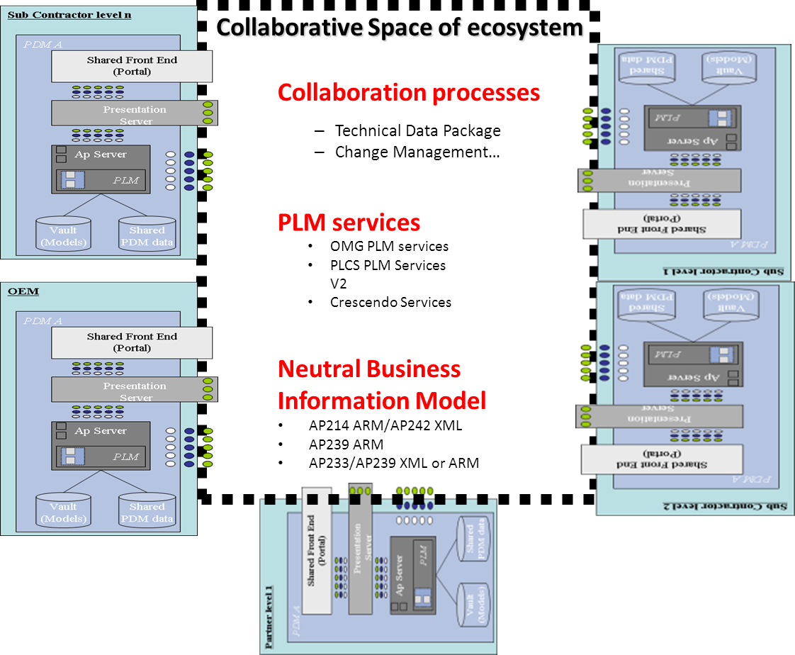
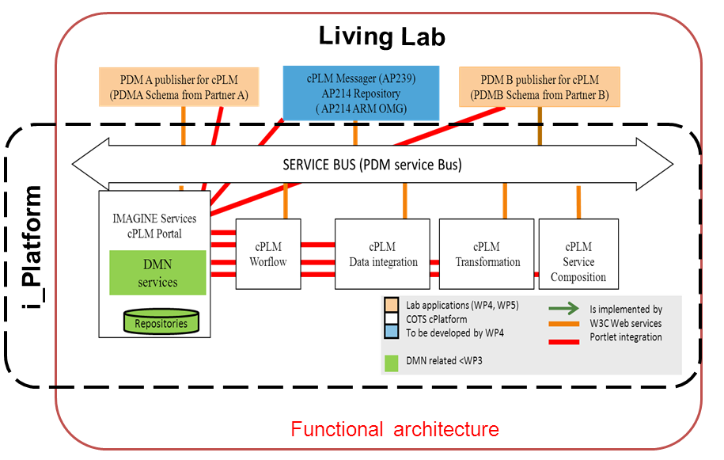
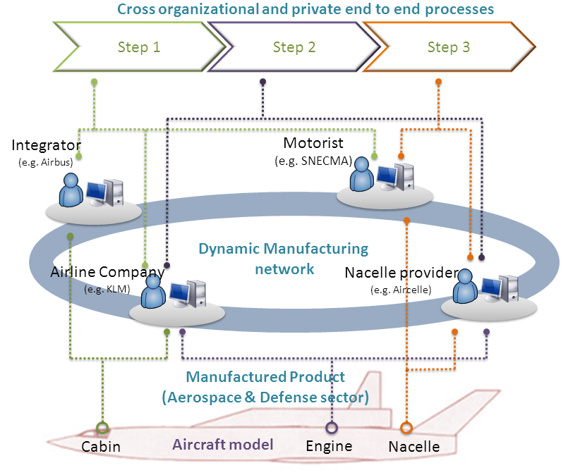

Welcome & Introduction to Interoperability
Objectives of the presentation.
who I am
Dr. Nicolas Figay
- Expert in Enterprise Application Interoperability
- Creator of ArchiCG — an open-source tool for semantic cartography
- International expert on PLM interoperability, MBSE, EA
- Contributor to major European projects on interoperability and digital continuity
- Former lead at Airbus
- Specialist in ISO STEP standards, ontology-based modeling, and open ecosystems
To share my experience and carrier path in order to
give you perspective for future development path
while contextualizing software development in a more global enterprises digitalisation context.
Objective of the presentation
Introduce enterprise application interoperability in digital ecosystems which imply to:
- Identify brakes and enablers to effective collaboration
- Discover semantic modeling and tools like ArchiCG
- Prepare systems for blockchain-based collaboration
- Promote open standards and model-driven approaches
- Bridge strategic vision with technical implementation
Part 01: Building Interoperability Foundations
- What is Enterprise Application Interoperability?
- Challenges: Silos, Semantics, Legacy, Governance
- Brakes & Enablers
- Innovative Approaches: MDE & Semantic Cartography
- ArchiCG: Polyglot Semantic Graphing Tool
Part 02: Interoperability and Blockchain
- Why interoperability matters before blockchain adoption
- ArchiCG for modeling continuous interoperability
- Reference architectures for traceable collaboration
- Open standards for trustworthy ecosystems
- Challenges and perspectives in blockchain-based networks
Key Message
Interoperability is not a feature of blockchain.
It is a prerequisite for blockchain-based collaboration.
- Semantic Coherence
- Shared Understanding of Processes
- Trusted and Traceable Integration
What Is Enterprise Application Interoperability?
🏢 Enterprise Application
An Enterprise Application is a software system designed to support and automate various business processes within an organization. These applications facilitate the integration of information across departments, enhancing efficiency and decision-making.
📌 Key Characteristics
- Process Integration: Connects disparate business functions such as finance, human resources, and supply chain.
- Data Consistency: Ensures uniform data across the organization.
- Scalability: Handles increasing amounts of data and users.
- Customization: Adaptable to specific organizational needs.
- Interoperability: Facilitates communication with other systems and applications.
🧩 Technical Enterprise Application
A Technical Enterprise Application is a specialized software system designed to support and automate technical and engineering processes within an enterprise. These applications manage complex data and workflows across the product lifecycle, including design, simulation, manufacturing, and maintenance, ensuring integration within the enterprise's information system.
🔧 Key Characteristics
- Domain-Specific Functionality: Tailored to engineering and technical domains, such as CAD, CAE, and PLM systems.
- Lifecycle Integration: Supports various phases of the product lifecycle, facilitating seamless transitions between stages.
- Interoperability: Designed to interact with other enterprise applications and systems, often through standardized protocols and data formats.
- Complex Data Management: Handles intricate datasets, including 3D models, simulations, and technical documentation.
- Scalability and Flexibility: Capable of adapting to evolving technical requirements and integrating new technologies.
🔗 Enterprise Application Interoperability
Enterprise Application Interoperability refers to the capability of diverse enterprise applications to seamlessly exchange, share, and aggregate information across organizational boundaries. This interoperability ensures continuous operational collaboration by aligning business processes, applications, and underlying technologies.
📌 Key Characteristics
- Governance and Architecture: Establishes governance structures and architectural frameworks to support interoperability.
- Standardization: Utilizes open and governed standards to facilitate consistent data exchange.
- Semantic Preservation: Maintains the meaning and context of information across different systems.
- Resilience and Agility: Enhances the organization's ability to adapt to changes and recover from disruptions.
- Collaborative Processes: Supports synchronized business processes across multiple organizations.
🕰️ Evolution of Enterprise Application Integration
From EAI to SOA to APIs
Enterprise application integration has evolved through several key stages:
🔄 Enterprise Application Integration (EAI)
- Era: 1990s
- Approach: Centralized integration using middleware (e.g., message brokers) to connect disparate applications.
- Challenges: Tight coupling, scalability issues, and vendor lock-in.
🧱 Service-Oriented Architecture (SOA)
- Era: Early 2000s
- Approach: Decentralized services with standardized interfaces (e.g., SOAP, WSDL) enabling reusable and interoperable components.
- Benefits: Improved modularity, scalability, and alignment with business processes.
🌐 Application Programming Interfaces (APIs)
- Era: 2010s–Present
- Approach: Lightweight, web-based interfaces (e.g., RESTful APIs) facilitating real-time, flexible integration.
- Advantages: Enhanced agility, ease of integration, and support for cloud-native architectures.
This progression reflects the ongoing efforts to improve interoperability, scalability, and adaptability in enterprise systems.
🔁 Continuous Operational Interoperability
Continuous Operational Interoperability refers to the sustained ability of diverse and evolving enterprise systems to seamlessly collaborate, ensuring uninterrupted information exchange and process integration across organizational boundaries. This concept emphasizes the need for ongoing alignment between business processes, supporting applications, and underlying technologies to maintain effective collaboration in dynamic environments.
📌 Key Aspects
- Governance and Architecture: Establishes strategic governance structures and architectural frameworks to support interoperability.
- Standardization: Utilizes open and governed standards to facilitate consistent data exchange.
- Semantic Preservation: Maintains the meaning and context of information across different systems.
- Resilience and Agility: Enhances the organization's ability to adapt to changes and recover from disruptions.
- Collaborative Processes: Supports synchronized business processes across multiple organizations.
🔗 Types of Interoperability
We can indentify five critical dimensions of interoperability essential for seamless enterprise collaboration:
- Data Interoperability: Ensures that data can be exchanged and understood across different systems, maintaining consistency and accuracy.
- Process Interoperability: Aligns business processes across organizations, enabling coordinated workflows and shared objectives.
- Semantic Interoperability: Guarantees that the meaning of exchanged information is preserved and understood, facilitating accurate interpretation.
- Technical Interoperability: Establishes the technical infrastructure and standards that allow systems to connect and communicate effectively.
- Organizational Interoperability: Aligns organizational structures, policies, and cultures to support collaborative efforts and shared goals.
These dimensions collectively contribute to achieving continuous operational interoperability, ensuring that enterprise systems can collaborate effectively and adapt to dynamic environments.
✈️ Collaborative Manufacturing Development as defined in RISESTEP, IMAGINE or SIP Research Projects
The RISESTEP, IMAGINEor SIP European projects exemplify collaborative efforts in the aerospace industry, focusing on the development of aircraft through distributed Digital Mock-Up (DMU) and system modeling. These initiatives address interoperability challenges by integrating diverse tools and processes across organizations.
The following video provides an overview of these collaborative projects:
Audience Interaction
Discussion or poll on real experiences
Key Challenges in Achieving Interoperability
⚠️ Key Challenges in Achieving Interoperability
Here are several critical challenges that organizations face when striving for continuous operational interoperability:
- Legacy Systems: Outdated systems with proprietary architectures hinder integration with modern technologies.
- Organizational Silos: Departments operating in isolation lead to fragmented processes and data, impeding collaboration.
- Semantic Mismatches: Inconsistent terminologies and data interpretations across systems cause misunderstandings and errors.
- Change Management: Resistance to change and lack of stakeholder engagement can derail interoperability initiatives.
- Cost of Integration: High expenses associated with system upgrades, training, and process reengineering can be prohibitive.
Addressing these challenges requires a strategic approach that encompasses technological upgrades, organizational restructuring, and stakeholder engagement.
⚙️ Challenge: Legacy Systems
Legacy systems, often built on outdated technologies, pose significant barriers to integration. Their proprietary architectures and lack of standard interfaces make it difficult to achieve seamless interoperability with modern systems.
Addressing this challenge involves strategies such as system modernization, the use of middleware solutions, and adopting open standards to facilitate communication between disparate systems.
🏢 Challenge: Organizational Silos
Organizational silos occur when departments or units operate in isolation, leading to fragmented processes and data. This lack of cross-functional collaboration hinders the flow of information and impedes interoperability efforts.
Overcoming silos requires fostering a culture of collaboration, implementing integrated information systems, and aligning organizational goals to promote shared understanding and cooperation.
🔤 Challenge: Semantic Mismatches
Semantic mismatches arise when different systems or stakeholders interpret data differently due to varying terminologies, formats, or contexts. These discrepancies can lead to misunderstandings and errors in data exchange.
To mitigate semantic mismatches, it's essential to develop shared vocabularies, ontologies, and data models that ensure consistent interpretation across systems and organizations.
🔄 Challenge: Change Management
Implementing interoperability solutions often requires significant organizational change. Resistance from stakeholders, lack of training, and inadequate communication can impede the adoption of new processes and technologies.
Effective change management involves engaging stakeholders early, providing comprehensive training, and maintaining open communication to facilitate smooth transitions and buy-in.
💰 Challenge: Cost of Integration
The financial investment required for integrating systems—such as purchasing new technologies, training personnel, and restructuring processes—can be substantial. High costs may deter organizations from pursuing interoperability initiatives.
To address this, organizations should conduct cost-benefit analyses, seek scalable solutions, and consider phased implementation approaches to manage expenses effectively.
💰 Challenge: Interoperability Barriers
💰 Challenge: Difficult subcontractors' conditions
💰 Challenge: Huge supply chains
💰 Challenge: Riching Digital Continuity despite complexity

Interoperability Brakes and Enablers
🚧 Brakes and Enablers of Interoperability
🔴 Brakes
- Cultural Barriers: Resistance to change and lack of shared vision among stakeholders.
- Organizational Silos: Fragmented structures that impede information flow and collaboration.
- Semantic Misalignments: Inconsistent terminologies and data interpretations across systems.
- Technical Incompatibilities: Diverse systems and technologies lacking standard interfaces.
- Economic Constraints: Limited resources allocated for integration initiatives.
🟢 Enablers
- Distributed Technical Service Oriented Platforms: with appropriate integration technologies
- Semantic Alignment: Developing shared vocabularies and ontologies to harmonize data interpretations.
- Organizational Alignment and Appropriated Governance: Structuring organizations to promote cross-functional collaboration.
- Strategic Governance: Allocating resources to support interoperability projects and training.
- Adoption of Standards: Implementing open standards like STEP and ISA-95 to ensure consistency.
Unleashing these brakes and leveraging the enablers federating interoperability framework are crucial steps toward achieving continuous operational interoperability.
🔗 Federated Interoperability Framework
Enablers are partial solution components to be aggregated and continuously reconfigured and upgraded integrated with legacy operational systems relying on legacy standards to achieve seamless secured digital collaboration across enterprises at an acceptable price.
- Federation over Replacement: Instead of replacing legacy systems, the framework advocates for their integration through standardized interfaces and semantic alignment.
- Model-Driven Engineering (MDE): Utilizes MDE to create adaptable models that can bridge diverse systems and processes.
- Extended Hypermodels: Introduces the concept of extended hypermodels to maintain semantic consistency across different domains and lifecycle stages.
- Service-Oriented Architecture (SOA): Leverages SOA principles to enable modular and reusable services, facilitating interoperability.
- Open Standards:: Employs open standards in order to build your collaborative open platform: ontologies, processes, services, applicative and software system components, application protcols - focussing on the interfaces contextualized in a consistent evolutionnary framework federating the existing ones
The evolutionnary character of such a federated framework have been illustrated and demonstrated accross several projects over 20 years
Innovative Approaches
- cPlatform: Iterative building of collaboration hub based on standardized protocols and components
- Living Lab: Involving users on experimenting in order to build their collaborative processes.
- Model Driven approach: projection of business logic on execution platform.
- Dynamic Manufacturing Network: Services for managing and qualifiying collaboration partners according to standardized cross organisational collaboration scenarios.
- Testbed: Assessing PLM standards adherence to collaboration processes on top of a testbed in order to derive test plan and test data sets for unitary and integration tests, but also enabling monitoring of actual collaboration
- Model Driven Engineering: Using Model Driven Architecture related technologies for project business logic on execution platform
- Extended Hypermodel for Interoperability: Ensuring Semantic Preservation and preventic data loss when changing platforms
cPlatform
Iterative building of collaboration hub based on standardized protocols and components
Living Lab
Involving users on experimenting in order to build their collaborative processes.
Dynamic Manufacturing Network
Services for managing and qualifiying collaboration partners according to standardized cross organisational collaboration scenarios
Testbed
Assessing PLM standards adherence to collaboration processes on top of a testbed in order to derive test plan and test data sets for unitary and integration tests, but also enabling monitoring of actual collaboration

Model Driven Approach
Projection of business logic on execution platform.
Extended hypermodel for Interoperability
Preserving semantic and preventing data loss.
Semantic Polyglot Cartography
Representing multi-language models semantically, mapping frameworks, enterprise perspectives.
ArchiCG
Introducing ArchiCG for collaborative modeling, traceability, and alignment of views.
Blockchain and Interoperability
- How to ensure continuous operational interoperability when including blockchains in enterprises?
- How to ensure end to end processes and cross organisational interoperability?
- How to ensure deal with digital continuity with evolution of Blockchain Technologies?
- Any architecture of reference?
- Open standards and maturity of the Digital Business Ecosystem in terms of interoperability?
- Other particular issues?
- Perspective leading to a growing usage and importance of blockchain technologies?
This will be presented as an open dialoque with XPRL specialists and the attendees.
Process Interoperability and Blockchain
Challenges in integrating operational processes with blockchain systems. Role of smart contracts and traceability.
Continuous Interoperability with ArchiCG
Using ArchiCG to model and maintain continuity across blockchain-enabled systems.
Blockchain Architecture of Reference
Layered architecture: ledger, consensus, identity, interfaces. Key principles for enterprise adoption.
Open Standards and Blockchain Ecosystems
Importance of open standards (e.g., W3C, EBSI, ISO) for interoperability in blockchain ecosystems.
Blockchain-Specific Issues
Scalability, performance, governance, energy use, integration with legacy.
Perspectives and Future Outlook
Blockchain convergence with AI, IoT, digital identity, and trusted execution environments.
Conclusion: are we ready now?
This will be presented as an open dialoque with XPRL specialists and the attendees.
Questions & Answers
Open floor for participants to raise issues, give feedback, share insights.